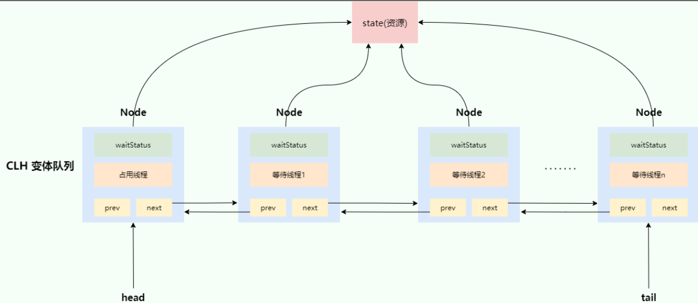
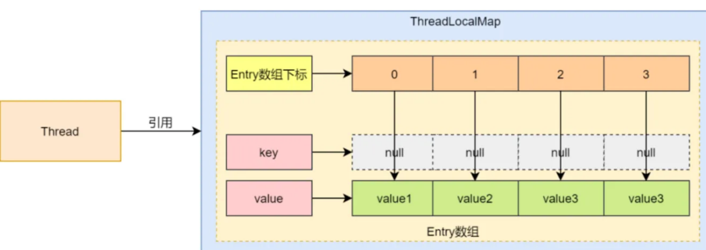
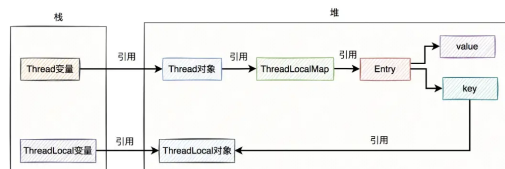

JUC-线程安全
如何理解线程安全
线程安全的核心是 在多线程并发访问共享资源（变量、对象、文件等）时。程序执行结果始终符合预期且不会出现数据错误和逻辑错误，根源在三个层面的问题
- 原子性：操作不可分割，要么全部成功执行要么全部执行失败
- 可见性：线程对共享变量的修改是对其他线程立刻可见的
- 有序性：代码执行的顺序是否可能被编译器或CPU进行指令重排序
指令重排序：CPU 或编译器为了提高程序的执行效率，改变代码执行顺序的一种优化技术
线程安全问题：
假设线程 A 和线程 B 同时执行 i++（初始值 i=0）：
- 线程 A 读取
i=0，线程 B 也读取i=0 - 线程 A 计算
i+1=1，线程 B 计算i+1=1 - 线程 A 写回
i=1，线程 B 写回i=1
- 最终结果：
i=1（期望值为2），出现错误
三者怎么保证
原子性：主要通过加锁实现的
可见性：
- volatile修饰的变量：
- 写操作：JVM 会发出一个StoreStore内存屏障指令，保证对当前线程工作内存中共享变量修改完之后写入到主内存，硬件层次上使用了MESI缓存一致性保障物理可见性
- 读操作：JVM 会发出一个loadload内存屏障指令，清空当前线程工作内存中共享内存变量的副本 ，直接从主内存中读取该变量的值
- synchronized，基于内存屏障：
- 在获取锁的时候jvm会执行MonitorEnter操作，代表获取锁并且同时执行一个loadload内存屏障指令（作用就是清空当前线程工作内存中共享内存变量的副本），使得线程在后续对这些变量的首次读取操作都必须从主内存中读取最新的值；
- 释放锁的时候，jvm执行MonitoExit释放锁，然后还会执行storestore内存屏障指令（将当前线程工作内存中被修改过的变量值刷新回主内存）
有序性：通过插入内存屏障，内存屏障前后自动禁用指令重排序优化
-
volatile：编译器在生成字节码时，会在指令序列中插入内存屏障来禁止特定类型的处理器重排
- 读操作后加入loadload屏障 后添加loadstore屏障
- 写操作前加入storestore屏障 后添加storeload屏障
-
synchronized
- monitorenter 和 monitorexit，来确保加锁代码块内的指令不会被重排
- 获取锁后加入loadload屏障
- 释放锁前加storestore屏障 后添加storeload屏障
MESI缓存一致性协议：主要用途是确保在多个 CPU 共享内存时，各个 CPU 的缓存数据能够保持一致性。当CPU修改共享内存中的变量时，由于其他CPU中也有该变量的副本，所以修改的时候会发出信号使其他CPU对该共享变量的缓存失效；当其他CPU读取该共享变量时，发现缓存失效那么就从内存重新读取
可见性
volatile线程可见性限制？线程可见性有什么方法？
volatile能保证变量修改后立即刷新到主内存，读取时直接从主内存加载，存在限制：
- 只适合单变量读写，仅对基本类型/引用类型的值修改有效，但是引用类型内部属性修改无可见性保证
- 不能代替锁，无法保证复合操作的原子性
实现线程可见性的方法：
- volatile：禁止指令重排 + 主内存直读直写
- synchronized：加锁 + 刷新主内存
- Lock（ReentrantLock）： Condition 通知
- final关键字：初始化后不可修改，主内存可见
- ThreadLocal：线程私有变量，避免共享
死锁问题
条件
死锁发生在多个线程相互等待对方释放锁时，比如说线程1持有锁 R1等待锁R2，线程2持有锁R2等待锁R1
发生死锁四个条件缺一不可：
- 互斥：资源不能被多个线程共享，一次只能由一个线程使用。如果一个线程已经占用了一个资源，其他请求该资源的线程必须等待，直到资源被释放
- 持有并等待：一个线程已经持有一个资源，并且在等待获取其他线程持有的资源
- 不可抢占：资源不能被强制从线程中夺走，必须等线程自己释放
- 循环等待：存在一种线程等待链，线程 A 等待线程 B 持有的资源，线程 B 等待线程 C 持有的资源，直到线程 N 又等待线程 A 持有的资源
避免
- 所有线程按照固定顺序进行申请资源，比如先申请R1再申请R2
- 如果线程发现无法获取某个资源可以先释放已经持有的资源再重新尝试申请
排查
- 系统层面，比如在Linux生产环境下可以使用
top ps等命令查看CPU、进程状态，看看是否有进程占用了过多的资源 - JVM层面，自带的性能监控工具，比如
jps -l查看当前进程，然后使用jstack 进程号查看当前进程的线程堆栈信息，看看是否有线程在等待锁资源 - 可视化的性能监控工具，比如说 JConsole、VisualVM 等，查看线程的运行状态、锁的竞争情况等。
锁
分类
- 悲观锁、乐观锁
- 公平锁、非公平锁
- 自旋锁
- 可重入锁
- 重量级锁和轻量级锁
- 独占锁和共享锁
悲观锁、乐观锁
-
悲观锁：总是假设最坏的情况，认为共享资源每次被访问都会出现问题，每次在获取共享资源的时候都会上锁，其他线程想要拿到这个资源就会阻塞等待。大量阻塞线程会导致系统上下文切换，增加系统性能开销；
悲观锁：synchronized、ReentrantLock、MySQL中写锁
适合写多读少，并发冲突概率高；数据一致性要求极高（金融系统）的场景
并发性能低（串行化）
-
乐观锁：认为共享资源每次被访问的时候不会出现问题，在提交修改的时候去验证对应的资源（版本号）是否被其它线程修改，若未被修改则提交，否则重试（自旋重试）或抛出异常。具体方法可以使用版本号机制或 CAS 算法。
适合读多写少(并发冲突的概率低)，可以降低锁定带来的性能开销；系统能够容忍或者处理失败的情况，因为乐观锁可能会因为并发冲突导致执行失败；并发性能高
可能存在的问题：
无限的自旋（while true）可能会导致cpu飙升
公平锁、非公平锁
-
ReentrantLock可以实现公平锁和非公平锁，底层是由AQS是实现的，默认是非公平锁。synchronized是一个非公平锁
-
公平锁：锁被释放之后，先申请的线程先得到锁
- 性能较差一些，因为公平锁为了保证时间上的绝对顺序，上下文切换更频繁
- 当线程在竞争锁资源时，会判断双向链表中是否有线程在等待，如果有就加入到链表的尾部进行等待
-
非公平锁：锁被释放之后，后申请的线程可能会先获取到锁，通过争抢的方式获取锁。
- 性能更好，但可能会导致某些线程永远无法获取到锁
- 当线程在竞争锁资源时，不管双向链表中是否有线程在等待，都会去尝试抢占锁资源，如果抢占不到，再加入双向链表
公平和非公平其实是相对于在双向链表中等待的线程而言的：进入等待队列就必须等待唤醒，新来的线程在有插队的权力
可重入锁
synchronized、ReentrantLock等都是可重入锁，可以防止死锁的问题
死锁：多个线程同时被阻塞，它们中的一个或者全部都在等待某个资源被释放。由于线程被无限期地阻塞，因此程序不可能正常终止
可重入就是同一个线程中锁可以不断传递，可以直接获取
Synchronized
使用
可以保证原子性、可见性、有序性
- 在普通方法上时，上锁的是执行这个方法的对象
- 在静态方法上时，上锁的是这个类的 Class 对象
- 在代码块上时，上锁的是括号中指定的对象，比如说当前对象 this
在操作系统层面，需要从用户态切换到内核态，向操作系统底层申请互斥量mutex，性能开销很大，因此称其为重量级锁
原理（重量级锁）
每个对象头部都有一个Mark Word，存储着对象的运行时数据，如哈希码、锁状态信息、GC分代年龄等，锁状态信息标志了Synchronized的状态
基于JVM的监视器Monitor实现线程同步，自动加锁释放锁，对应两条字节码指令monitorenter和monitorexit
- 线程执行monitorenter时，JVM检查锁对象的监视器
- 如果Owner为空，那么当前线程成为owner，count++
- 如果Owner被占用，检查锁对象的Mark Word的线程ID是否为当前线程
- 是的话count++，当前线程持有锁
- 不是的话，当前线程进入EntryList阻塞等待
- 线程执行monitorexit时，count–，检查count是否为0
- 为0，JVM释放锁，唤醒EntryList中的线程，让他们竞争锁
- 不为0，那么继续等待释放
1 | |
锁升级
JDK1.6以前 直接就是重量级锁，使用到了操作系统的互斥锁，也就是一个线程持有锁时，其他试图进入synchronized块的线程将被阻塞，直到锁被释放。涉及到了线程上下文切换和用户态与内核态的切换，因此效率较低。
JDK1.6引入了锁升级：无所、偏向锁、轻量级锁、重量级锁
-
无锁->偏向锁：当一个线程首次进入synchronized代码块时，JVM会将锁标记为偏向锁，并且在锁对象头记录该线程ID；后续如果该线程再次请求同一把锁，通过比较线程ID直接获取锁，这个是为了没有锁竞争且需要重入场景引入的
-
偏向锁->轻量级锁：如果再有其他线程来请求获取锁，那么偏向锁就会被撤销，两个线程通过CAS的方式自旋尝试获取锁，获取锁后JVM将锁标记为轻量级锁
获取锁的方式：
1、将锁对象的Mark Word复制到当前线程栈中的锁记录中
2、通过CAS操作将锁对象头的Mark Word更新为自己的锁记录，更新成功就是获取到了锁
-
轻量级锁->重量级锁：当有较多线程短时间内请求获取锁，意味着当前竞争比较激烈，而轻量级锁使用的CAS的方式会占用CPU，因此此时会发生锁膨胀，JVM将锁标记为重量级锁，重量级锁中竞争失败的锁会陷入阻塞，不会占用CPU，而重量级锁的原理：（请看上方Synchronized的原理）
CAS
原理
CAS，Compare And Swap（比较再交换），基本原理就是在更新前检查数据是否被修改，若未被修改则更新，否则自旋重试。
详细来说的话，CAS有三个操作数：主存共享变量V、旧的预期值E、要修改的新值N（E N都是每个线程独有的）
当线程想要去修改主存共享变量V的时候，要先把V的值拷贝到线程的工作内存中，也就是作为旧的预期值E，然后计算得到新的值N。然后线程带着E和要修改的新值N再次找到主存共享变量V，先比较E和V是否相同。
- V==E，若相同，说明在这期间没有其他线程修改过主存共享变量V，是线程安全的。因此把新值N写入主存共享变量V
- V!=E，若不同，说明在这期间有其他线程修改过主存共享变量V，不是线程安全的。因此此时需要自旋重试
- 自旋：再次取得主存共享变量V的值，再次比较旧的预期值E和主存共享变量V的值是否相同。又回到刚刚的逻辑。直至自旋成功
原子性
当时我再学习CAS的时候考虑到比较和交换是两个操作怎么保证的原子性？查了一下将它维持原子性的原理：依靠硬件实现的
- 首先在Java中直接使用CAS需要调用unsafe类的compareAndSawpInt或者compareAndSawpObject等方法，这些方法都是由native修饰的本地方法，是c++实现的。这些本地方法依赖了cpu的原子指令（cmpxchg），由硬件支持保证原子性，硬件就是通过锁定总线或者锁定缓存避免其他CPU访问公共资源。硬件的操作性能高，代价低，不阻塞线程
- 锁定总线：早期处理器（如 486、Pentium）中，
LOCK前缀会触发处理器在总线上发出LOCK# 信号，阻止其他处理器访问共享内存地址，直到当前指令执行完毕。这种方式通过物理总线仲裁实现原子性，但会导致总线带宽被独占，性能开销较大。 - 锁定缓存：现代处理器（如 P6 架构之后）引入缓存一致性协议（如 MESI），
LOCK前缀不再强制锁总线，而是尝试在缓存层面实现原子性：- 当目标内存地址已被缓存时，处理器将对应的缓存行（Cache Line）标记为 Modified 状态，并通过 MESI 协议通知其他处理器将该缓存行置为 Invalid，从而独占访问权。
- 若缓存行处于 Exclusive 状态（仅当前处理器持有且与内存一致），可直接修改；若为 Shared 状态，则需先触发缓存行状态升级为 Modified，确保其他处理器无法同时操作。
CAS的优缺点
优点
没有获取的线程不会阻塞，一直处于用户态，通过循环进行重试。减少了线程上下文的切换
缺点：
- 存在ABA问题。原先V的值为A，线程1修改为B，线程2再次修改回来A，这样CAS 操作就会误认为它从来没有被修改过。解决方法就是加上版本号或者时间戳。JDK1.5以后的方法compareAndSet，通过比较当前引用和预期引用是否相同来解决
- 自旋时间长开销大。CAS 经常会用到自旋操作来进行重试，也就是不成功就一直循环执行直到成功。如果长时间不成功，会给 CPU 带来非常大的执行开销。可以进行控制循环的次数或者时间来避免消耗过多的CPU资源
- 只能保证一个共享变量的原子操作。CAS 操作仅能对单个共享变量有效。当需要操作多个共享变量时，CAS 就显得无能为力。从 JDK 1.5 开始，Java 提供了
AtomicReference类，将多个变量封装在一个对象中，这使得我们能够保证引用对象之间的原子性。
AQS
AbstractQueuedSynchronizer，抽象队列同步器
AQS主要由两部分组成：volatile修饰的int类型的state属性和FIFO的等待队列（双向链表）
- state表示共享资源的状态，不同子类中的实现对于state的值有不同的涵义，由CAS进行修改的，保证了线程安全性
- 独占模式是只有一个线程能够访问资源（ReentrantLock），共享模式可以允许多个线程同时访问资源（CountDownLatch）
- ReentrantLock：
- 0：当前资源没有被加锁
- 1：当前资源已经被加锁
>1：当前资源已经被加了多把锁（可重入锁
- CountDownLatch：
state表示剩余的计数
- 等待队列(双向链表)：用于存储等待获取锁的线程，因为有些线程可以抢占到锁，而有些线程无法抢占到锁，此时，没有竞争到锁的线程就会被打包为一个Node节点，插入双向链表的尾部，并且阻塞线程。当释放锁时，会唤醒双向链表中的head的后继节点节点

基于AQS实现：
- 独享模式：ReentrantLock
- 共享模式：Semaphore（信号量）、CountDownLatch
ReentrantLock
基于AQS+CAS+LockSupport实现，Lock是接口，ReentrantLock是实现类
LockSupport.park(); //阻塞线程
LockSupoort.unpark(Thread);//唤醒线程
Lock和Synchronized对比
- Lock锁基于AQS封装，结合CAS和LockSupport.park/unpark实现的，锁的升级需要手动的实现
- synchronized基于C++虚拟机封装，自动实现锁升级的过程
| ReentrantLock | Synchronized | |
|---|---|---|
| 特性 | JDK提供的一个类 | Java内置关键字 |
| 实现层面 | 在JDK代码层面实现 | 在JVM层面(操作系统)层面实现 |
| 灵活性 | 支持响应中断、超时、尝试获取锁 | 不灵活 |
| 用法区别 | lock()和unlock()加锁解锁，非常灵活 | 一般修饰在方法/代码块上 |
| 公平锁 | 提供了公平锁和非公平锁 | 是非公平锁，不支持公平锁 |
| 可重入性 | 可重入 | 可重入 |
| 使用场景 | 适合复杂场景 | 适合简单场景 |
更详细的话：
- ReentrantLock 可以实现多路选择通知，绑定多个Condition；而 synchronized 只能通过 wait 和 notify 唤醒，属于单路通知
- synchronized 可以在方法和代码块上加锁，ReentrantLock 只能在代码块上加锁，但可以指定是公平锁还是非公平锁
- ReentrantLock 提供了一种能够中断等待锁的线程机制，通过
lock.lockInterruptibly()来实现
ThreadLocal
理解
ThreadLocal 提供了一种线程级别的数据存储机制。每个线程都拥有自己独立的
ThreadLocal，意味着每个线程都可以独立地、安全地操作这些变量，而不会影响其他线程。
使用场景
- 设计模式，模板方法
- SpringMVC获取Httprequest对象
- 用户身份信息存储：在请求的拦截器/过滤器中鉴权校验用户身份，把用户信息(如用户ID、权限)存入 ThreadLocal 中，在请求的后续链路中如果需要获取用户信息的，直接在 ThreadLocal 中获取即可（项目中使用到了）
- 线程安全：ThreadLocal 可以用来存储一些需要并发安全处理的成员变量，比如SimpleDateFormat，由于 SimpleDateFormat 不是线程安全的，可以使用 ThreadLocal 为每个线程创建一个独立的 SimpleDateFormat实例，从而避免线程安全问题
- 日志上下文存储：在常见的日志框架中，经常使用 ThreadLocal 来存储与当前线程相关的日志上下文。这允许开发者在打印日志消息时包含特定于线程的信息，如用户ID，这对于调试和监控是非常有用的（相当于为了打印每条日志时能看到用户ID或其他信息）
- traceld 存储：和上面存储日志上下文类似，在分布式链路追踪中，需要存储本次请求的 traceld，通常也都是基于 ThreadLocal 存储的
- 数据库 Session：很多ORM框架，如Hibernate、Mybatis，都是使用 ThreadLocal 来存储和管理数据库会话的这样可以确保每个线程都有自己的会话实例，避免了在多线程环境中出现的线程安全问题
主要的两个作用：
- 在线程中传递数据，在同一个线程执行过程中，ThreadLocal 的数据一直在，所以可以在前面把数据放到 ThreadLocal 中，在后面需要时再取出来用，就可以避免数据通过参数在多层方法传递
- 解决并发问题
原理
ThreadLocal类维护了一个ThreadLocalMap类型的变量，默认情况下是为null，只有set和get的时候才会创建。ThreadLocalMap里面维护Entry数组，Entry对象就存储着ThreadLocal和Value，每个Entry对象在数组中的位置就是通过ThreadLocal计算哈希得到的
- set的过程：获取当前线程，获取当前线程的ThreadLocalMap，调用其set方法，存入的 key 是this(即ThreadLocal对象本身)，value是要存入的数据
- get的过程：获取当前线程，获取当前线程的ThreadLocalMap，调用其get方法，通过this(即ThreadLocal对象本身) 获取到之前存入的数据

内存泄漏问题
引用链：Thread->ThreadLocalMap->Entry[]->key，value
前置：强软弱虚引用
- 强引用：一个对象如果具有强引用那么只要这种引用还存在就不会被回收。如果内存不足时，JVM开始GC，对于强引用对象就算出现OOM该对象也不会被回收
- 软引用：内存充足不会被回收，内存不足在GC的时候会被回收
- 弱引用：一个对象只有弱引用，那么只要进行GC，不管内存如何都会被回收
- 虚引用：虚引用是所有引用中最弱的一种引用，其存在就是为了将关联虚引用的对象在被GC掉之后收到一个通知
软弱虚都是说只有他们自己的引用
错误的使用，将ThreadLocal置为null，key会被清理value泄露（如果线程还存在）
使用线程池的方式，核心线程是会反复使用的，线程中对应的 ThreadLocalMap 会被线程强引用，所以 ThreadLocalMap 不能被 GC 自动回收，而 ThreadLocalMap 中包含一个 Entry 数组，Entry 数组中含有多个< Key 为 ThreadLocal，value为存储的数据 > 的Entry对象。虽然 Entry 对象中的 Key 是弱引用，能够被 GC 自动回收；但 value 是强引用，不能被 GC 自动回收。所以，在线程池中使用ThreadLocal会存在内存泄露的风险。
解决方法：
- 手动的调用remove方法（拦截器/过滤器，finally）
- ThreadLocal是弱引用，底层每次在set的时候都会清除之前key为null的value

为什么ThreadLocal的key是弱引用？value是强引用？
弱引用：ThreadLocalMap 中在进行 set 和 get 操作时会进行启发式清理和探测式清理，清理一部分 key 为 null 的 Entry 对象，如果key也是强引用的话，那么只要没有remove或者线程结束这个key一直存在，启发式和探测式清理都会失效了，后备方案都不存在了
强引用：Entry的value假如只是被Entry引用，有可能没被业务系统中的其他地方引用。如果将value改成了弱引用，被GC贸然回收了（数据突然没了），可能会导致业务系统出现异常
探索式清理：从当前节点开始遍历数组，将key等于null的entry置为null，key不等于null则rehash重新分配位置，若重新分配上的位置有元素则往后顺延
启发式清理： 从当前节点开始，进行do-while循环检查清理过期key，结束条件是连续
n次未发现过期key就跳出循环，n是经过位运算计算得出的触发时机：
- set方法最后会执行一次启发式清理
- set方法遇到key=null、rehash方法、get方法遇到key过期、启发式清理遇到key=null时进行一轮探索式清理
缺点
父线程无法通过ThreadLocal给子线程传值
解决：InheritableThreadLocal
原理
在 Thread 类的定义中，每个线程都有两个 ThreadLocalMap：
1 | |
普通 ThreadLocal 变量存储在 threadLocals 中，不会被子线程继承。
InheritableThreadLocal 变量存储在 inheritableThreadLocals 中，当 new Thread() 创建一个子线程时，Thread 的 init() 方法会检查父线程是否有 inheritableThreadLocals，如果有，就会拷贝 InheritableThreadLocal 变量到子线程。